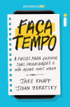

Clube do Livro
Offline
Desconectado
Livro Atual

Faça tempo
escrito por Jake Knapp e John Zeratsky. traduzido por Jaime
Biaggio
Um livro sobre produtividade que não aumenta o seu nível de estresse
Discussão Desconectada: dia 23 de Abril de 2026 às 19h no Bretão
R$ 34,00 a versão para Kindle na
Amazon
Disponível como audiolivro na
Audible
A proposta do Clube do Livro
Offline
Desconectado
-
Nenhuma presença online além deste site. Sem grupo no WhatsApp,
sem Instagram, sem TikTok, etc
-
Cada um lê no seu ritmo. Sem meta de capítulos lidos até o
encontro presencial
-
Econtro presencial toda quarta quinta-feira do mês no mesmo
lugar
-
Participa do encontro quem quer sem precisar prestar contas
quando faltar. Se ninguem mais for, coma um PCQ, beba algo, e
siga a vida